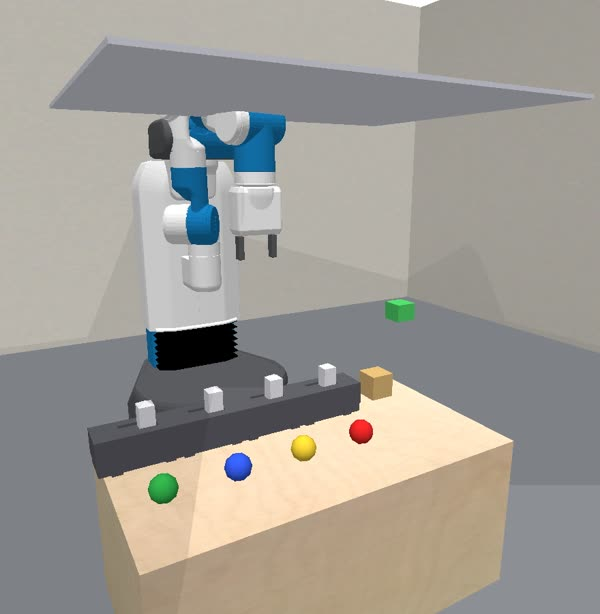
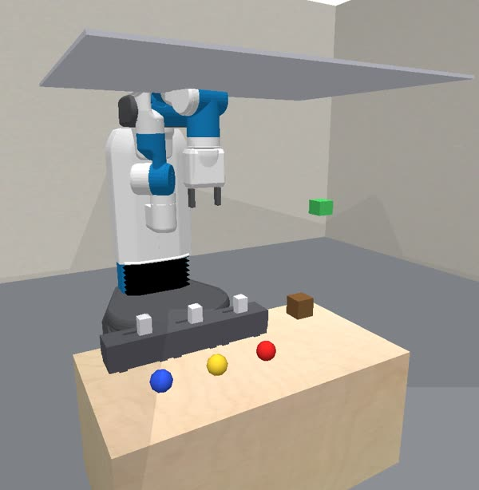
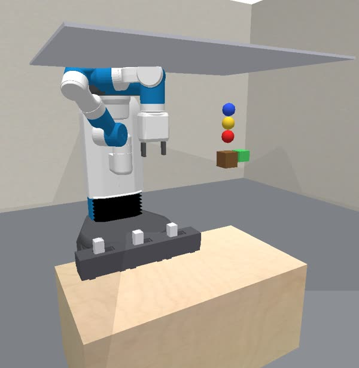
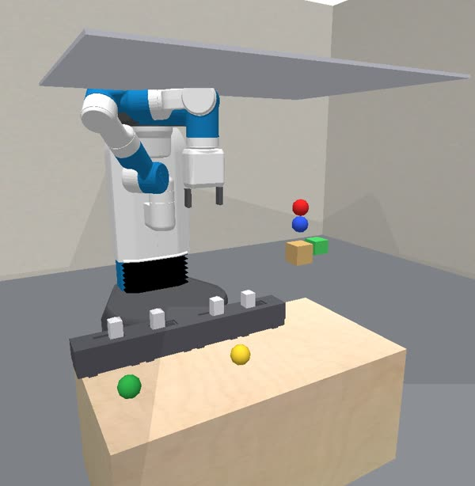

Balloons and a box: free the right balloons to float a box into a band
pybullet_balloons - branch bridge-learning - 2026-09-06
Assets: docs/envs/balloons/ - after the 2026-09-06 overview "Balloons and a Box"
Slides 2-4: the domain, its objects and features. 5-7: what happens and the hidden law. 8-11: predicates, skills, the train/test split, what has to be learned. 12-14: the continual protocol, pointers, glossary.

A test level at its start: four clipped balloons, one box, the green band above it.
Release) or hold still (Wait). Nothing else.| Type | Features (in state order) | What they mean |
|---|---|---|
robot (1) | x, y, z, fingers, roll, tilt, wrist | end-effector pose and gripper; the arm's joints ride in the simulator state |
box (1) | x, y, z, color, speed | where the box is, its material (0 pine, 1 oak, 2 teak), and how fast it moves; the goal reads z against the band and speed against the settle threshold |
balloon (2-4) | x, y, z, color, tied, popped | the balloon's pose, its gas (0 red, 1 blue, 2 green, 3 gold), whether it has been freed and pulled onto the box, whether it has burst |
clip (one per balloon) | x, y, z, rot, is_on | the toggle in front of each balloon; is_on is 1 once pushed open, and it never closes again |
band (1) | x, y, lo, hi | the target: the box's centre must rest between lo and hi, 5 cm apart |
box, balloon0.., clip0.. (clip i holds balloon i), band, robot. The goal text names the box by material and gives the band's heights, e.g.
"Open clips to free balloons so that the oak box floats up and hangs still with its centre inside the green band (0.77 to 0.82 m)".tied flag), the forces, the constants of the law.
A train level: three balloons, an oak box, band at 0.77 to 0.82 m.
Hidden mechanics live in pybullet_balloons.py; the base sim in pybullet_balloons_base.py is copied into the agent's sandbox as reference source.
| Quantity | True value | On the base sim |
|---|---|---|
| red, blue, green, gold lift | 0.35, 0.50, 0.70, 1.00 N | absent |
| fade height h | 0.80 m | absent |
| box mass pine / oak / teak | 0.05 / 0.08 / 0.11 kg | 0.10 kg for all |
| balloon mass | 0.005 kg | visible |
| air drag | 12 | absent |
| ceiling height | 0.78 m above the table | visible |
Values from predicators/settings.py (balloons_lifts, balloons_fade_height, balloons_box_masses, balloons_drag).
Only pine and oak boxes appear in either split by default (balloons_box_colors_{train,test}).
| Clips opened | Σ lift | Hover z* |
|---|---|---|
| gold | 1.00 N | 0.533 m |
| red + gold | 1.35 N | 0.677 m |
| gold + blue | 1.50 N | 0.729 m |
| red + gold + blue | 1.85 N | 0.797 m, in band |
| red, blue, red + blue | ≤ 0.85 N | never lifts |
Each line is a subset's total lift falling with height; its dashed line is the weight it must carry. The dot is where they meet: the hover height. Only one subset reaches the band. Band 0.77 to 0.82 m. Weight = (0.08 kg + 0.005 kg per freed balloon) x 9.81.
Env predicates
InBand(box, band): the box hangs at rest with its centre inside the band; the goal is this one atomTied(b), Untied(b): whether balloon b has been freed and pulled onto the boxIntact(b), Popped(b)ClipOn(c), ClipOff(c): open or closedAtRest(box): speed below the settle threshold; HandEmpty(robot)Oracle-only helpers (ground_truth_models/balloons/)
Needed(b): the balloon is in the level's answer subset; Holds(clip, b); derived AllNeededTied(band)Rise (the box climbs once every needed balloon is tied) and the endogenous Wait; the oracle opens the answer subset's clips weakest lift first.Skills (shared push factory)
Release(robot, clip)[approach, contact_z]: push the clip's toggle open; the same push skill busyboard uses on its switches, with defaults balloons_push_approach 0.07 and balloons_push_contact_z 0.05Wait(robot)[]: hold still while the physics plays out; the box needs a few hundred steps to rise and settleEvaluator. The level is won when the goal atom holds and the box is at rest. A burst balloon terminates the episode and the certificate says which balloon burst on the ceiling.
Under the continual protocol the agent arms start with no predicates: the observation is the features above and a render, and the model arm invents its own predicates.
| Split | Balloons | Box materials | How the rack is drawn |
|---|---|---|---|
| Train | 2 or 3 (balloons_num_balloons_train) | pine or oak | a covering draw: each level prefers the colours and the material earlier train levels have not shown, so two levels together show every colour and both materials |
| Test | 4 (balloons_num_balloons_test): the whole palette | pine or oak | a rack training never showed, built from lifts and a mass it did |
balloons_band_half).balloons_max_sampling_attempts 40 tries).

Structure: rules the base sim lacks
Attach, ApplyForce).Parameters: constants to identify
Why it favours a model: a guessing agent pays for each wrong subset with a level; a model-fitting agent computes the subset before touching a clip. This is the mirror image of busyboard, where the unknown is discrete and a parameter fit has nothing to grip.
agent_continual, with run_python over the recorded data and sim.fit / sim.run on its own simulator.py, and the model-free agent_continual_model_free, with the same env and skill tools and no model.docs/envs/balloons/oracle_solve.mp4; the frames in this deck are from it.SKIP: True in scripts/configs/predicatorv3/protocol_continual.yaml); the env flags live in envs/all.yaml (sesame_check_expected_atoms False, since the box reaches the band a few ticks after the last release).| Path | What |
|---|---|
predicators/envs/pybullet_balloons_base.py | The visible simulator: table, box, clips, rack, band, ceiling. Surfaced to agents as reference source. |
predicators/envs/pybullet_balloons.py | Release, lift, pop, masses, task generation, evaluator, predicates. |
predicators/ground_truth_models/balloons/ | Options, helper predicates (Needed, Holds, AllNeededTied), processes, the oracle's plan, the ground-truth simulator in the agent's contract. |
tests/envs/test_pybullet_balloons.py | Tests. |
docs/envs/balloons/README.md | The env's write-up; the four frames of this deck and oracle_solve.mp4 sit beside it. |
docs/envs/balloons/overview_slides.html | The 2026-09-06 standalone overview this deck follows. |
# Oracle demo
python predicators/main.py --env pybullet_balloons --approach oracle --seed 0 \
--experiment_protocol continual --num_train_tasks 1 --num_test_tasks 1 \
--sesame_check_expected_atoms False
Sibling envs with the same base-plus-hidden split: ice rink, launcher, magnets, crane. Commits 2be513aaa (the domains) and 9728420ec (ground-truth simulators in the agent's contract).
| Name | Meaning |
|---|---|
| lift, fade height | The upward force a balloon colour exerts at table height, and the height over which it falls linearly to zero. |
| hover height z* | Where the total fading lift equals the weight of the box plus its freed balloons; the box hangs there. |
| band | The goal: a 5 cm range of heights set to one subset's hover height, plus or minus 2.5 cm. |
| subset, answer subset | A choice of clips to open; the unique one whose hover height lies in the band. The oracle's helper Needed marks its balloons. |
| release, tie, pop | Opening a clip; the freed balloon seating on the box (the tied flag); a balloon bursting at the ceiling (the popped flag, which loses the level). |
| covering draw | How training racks are chosen: each level prefers colours and a material earlier levels have not shown, so training covers the palette. |
| base sim, residual rules | The visible physics the agent rolls out, on which nothing lifts; the rules the model arm writes on top of it (Attach, ApplyForce) to reproduce release, lift and pop. |
| level, run, pooled cap | One task the run must win before the next; one env and seed played to its end; the run's only step budget. |
| model-based arm, model-free arm | agent_continual with the fit-and-rollout workbench; agent_continual_model_free without it. |